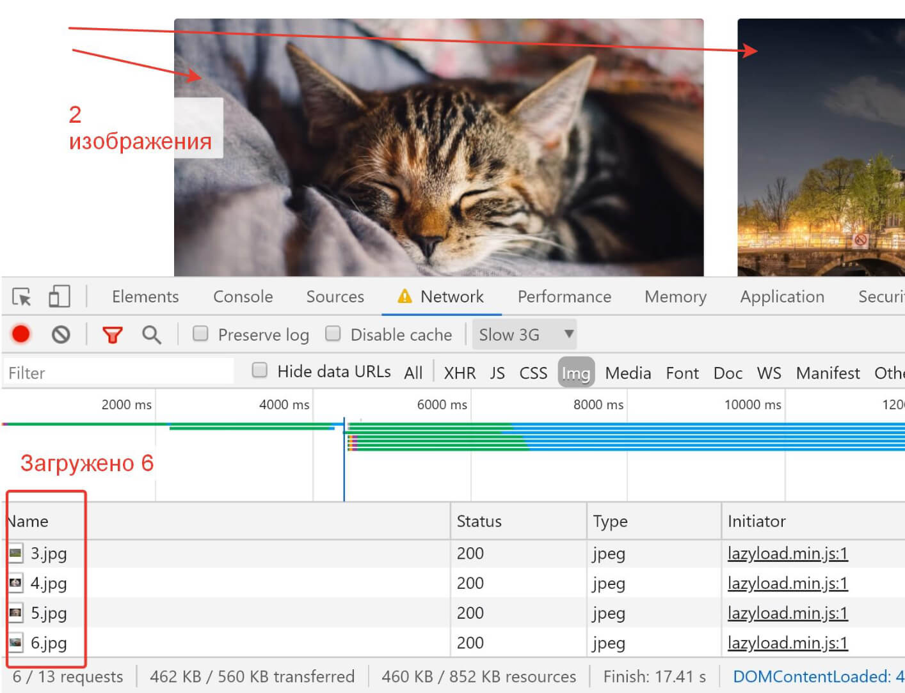
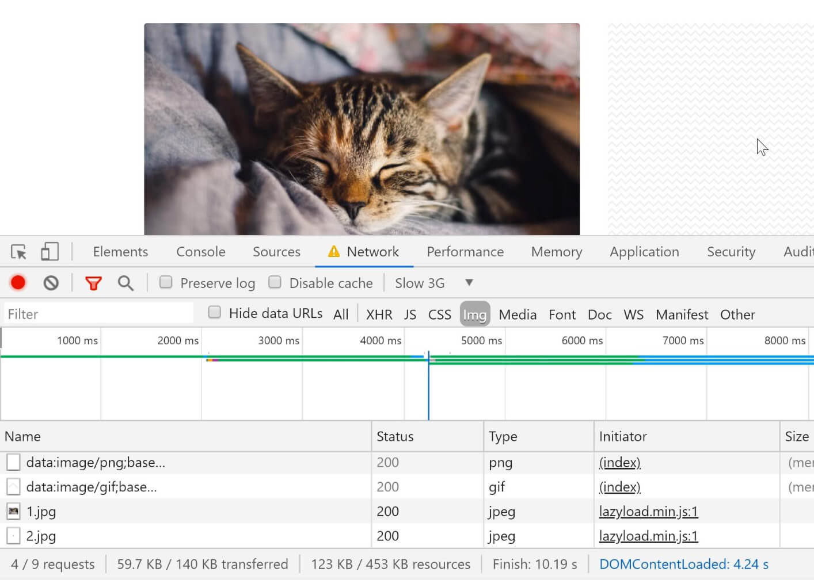

Сегодня мы затронем очень важную тему - отложенная загрузка респонсив изображений на сайте - lazy load. Изображения на сайтах занимают весомую часть контента - от 70 до 80 процентов общей площади страниц и их загрузку обязательно нужно оптимизировать.

Полезные материалы по теме Lazy Load:
- Генератор Lazy Load тамбов: Lazy Load Generator
- Архив с файлами урока: Скачать
Ни для кого не секрет, что изображения на сайтах занимают весомую часть контента - от 70 до 80 процентов общей площади страниц это изображения и их обязательно нужно оптимизировать. Даже в официальной справке Google рекомендуется использование отложенной загрузки изображений lazy loading, а сервис Google PageSpeed чутко следит за тем, чтобы загрузка изображений была оптимизирована.
В этой статье я расскажу о правильной оптимизации загрузки изображений на сайте.
Скорее всего, вам известны плагины, подобные Lazy Load, подключив которые к проекту, можно без особых усилий оптимизировать загрузку изображений. Подключение таких плагинов не сложное, требуется только подключить скрипт lazyload.js в проект, инициализировать его в js на конкретный селектор тега img и указать в атрибутах изображения соответствующий "data-" параметр, например, date-src или data-original, в зависимости от используемого плагина:
<!-- HTML: -->
<script src="js/lazyload.js">
<img class="lazy" data-original="img/example.jpg">
// JS (jQuery):
$("img.lazy").lazyload();
Однако, подключив Lazy Load вы столкнетесь с рядом проблем.
Во-первых, при загрузке страницы без тамбнейлов (заглушек), ваши страницы будут распадаться, а Lazy Load работать неправильно, загружая все изображения в теги img, которые были видны в момент, когда они еще не сформировались. Например, мы видим, что в видимой части находятся всего два изображения, однако загрузились 6 картинок, в том числе и те, которе находятся вне вьюпорта:
В документации к любому плагину Lazy Load для решения этой проблемы предлагается использовать так называемые тамбы (thumbnails) или, другими словами, заглушки изображений в атрибуте src изображения, которые будут держать форму сайта до загрузки настоящих изображений:
<img class="lazy" src="thumb.png" data-original="img/example.jpg">Тамбы представляют из себя, как правило, прозрачные изображения в тех-же пропорциях, что изображения оригинальные или даже в том-же самом разрешении. Кроме того, рекомендуюется использовать сгенерированное base64 изображение, которое будет находиться непосредственно в верстке для уменьшения количества запросов к серверу и сокращения времени ожидания.
Пример base64 изображения:
data:image/gif;base64,R0lGODlhCgAIAIABAN3d3f///yH5BAEAAAEALAAAAAAKAAgAAAINjAOnyJv2oJOrVXrzKQA7
Однако, проблема заключается в том, что на создание таких тамбов требуется время. Это или создание физического изображения в Photoshop или других графических редакторых, или генерация base64 изображения посредством различных онлайн-сервисов.
Не найдя централизованного сервиса для работы с тамбами для Lazy Load, я решил написать свой сервис. Здесь можно вычислить соотношение сторон вашего оригинального изображения, сгенерировать base64 заглушку, скачать PNG заглушки на компьютер и даже сконвертировать GIF-узор для фона, который будет отображаться до тех пор, пока не будет загружено изображение.
Премиум уроки от WebDesign Master


Другие уроки по теме «Инструменты»
- Настройка Parcel для веб-разработки
- Tailwind CSS для начинающих. Подробный урок по подключению, настройке и использованию
- Настройка VS Code для веб-разработки
- Starter - Простой стартер для веб-разработки
- Урок по хостингу от А до Я. Сайты, базы, домены, SSL, SSH, sFTP
- Gulp - Актуальное и исчерпывающее руководство для самых маленьких